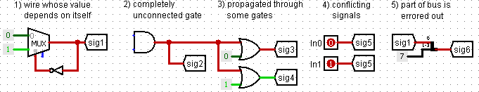
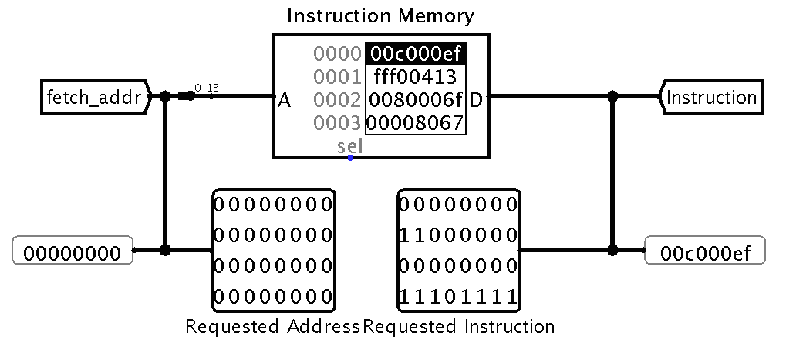
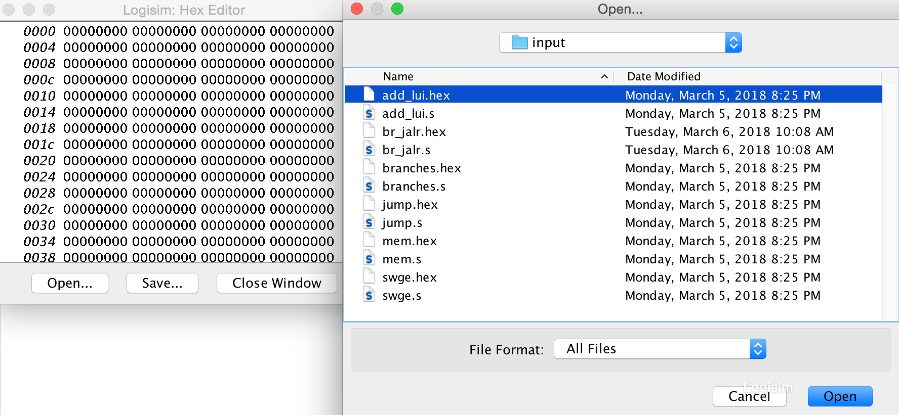

NOTE: All important updates will be posted on Piazza thread. Please prioritize Piazza as the source of truth and check it regularly.
IMPORTANT INFO - PLEASE READ
You are allowed to use any of Logisim's built-in blocks for all parts of this project.
Save often. Logism can be buggy and the last thing you want is to lose some of your hard work. There are students every semester who have had to start over large chunks of their projects due to this.
Approach this project like you would any coding assignment: construct it piece by piece and test each component early and often!
MAKE SURE TO CHECK YOUR CIRCUITS WITH THE GIVEN HARNESSES TO SEE IF THEY FIT! YOU WILL FAIL ALL OUR TESTS IF THEY DO NOT. (This also means that you should not be moving around given inputs and outputs ports in the circuit files alu.circ, regfile.circ, mem.circ, and cpu.circ).
Because the files you are working on are not plain code and circuit schematics, they can't really be merged. DO NOT WORK ON THE SAME FILE IN TWO PLACES AND TRY TO MERGE THEM. YOU WILL NOT BE ABLE TO MERGE THEM AND YOU WILL BE SAD.
Make sure all your changes are located in cpu.circ. If you need to modularize, use sub-circuits instead of a new library module.
Overview
In this project you will be using Logisim to implement a 32-bit two-cycle processor based on RISC-V. This project is meant to give you a better understanding of the actual RISC-V datapath. In fact, after this project you would have everything you needed to know in order to build a RISC-V CPU in Logisim that could understand your assembled and linked input from Project 2!
In part II, you will complete a 2-stage pipelined processor!
0) Obtaining the Files
We have added the CPU template (cpu.circ) and harness (run.circ), the data memory module (mem.circ). First, commit all changes that you had for part 1. Then, please fetch and merge the changes from the proj3-2 branch of the starter repo. For example, if you have set the proj3-starter remote link:
cd proj3-XXX # Go inside the project directory
git fetch proj3-starter
git merge proj3-starter/master -m "merge proj3-2 skeleton code"
If you do not have the proj3-starter remote link from part I, you can run:
If you do have some other incorrect value for the proj3-starter remote link, delete it first by running:
git remote rm proj3-starter
The starter code locates in sp18-proj3-starter/part2, before you start, you will need to copy your implementation of ALU and RegFile from part1 over:
cd sp18-proj3-starter
cp alu.circ regfile.circ part2/
1) Getting Started - Processor
We have provided a skeleton for your processor in cpu.circ. You will be using your own implementations of the ALU and RegFile as you construct your datapath. If you find any errors in either of these components, you should definitely fix them. You are responsible for constructing the entire datapath and control from scratch. Your completed processor should implement the ISA detailed below in the section Instruction Set Architecture (ISA) using a two-cycle pipeline, specified below.
Your processor will get its program from the processor harness run.circ. Your processor will output the address of an instruction, and accept the instruction at that address as an input. Inspect run.circ to see exactly what's going on. (This same harness will be used to test your final submission, so make sure your CPU fits in the harness before submitting your work!) Your processor has 2 inputs that come from the harness:
Input Name
Bit Width
Description
INSTRUCTION
32
Driven with the instruction at the instruction memory address identified by the FETCH_ADDRESS (see below).
CLOCK
1
The input for the clock. As with the register file, this can be sent into subcircuits (e.g. the CLK input for your register file) or attached directly to the clock inputs of memory units in Logisim, but should not otherwise be gated (i.e., do not invert it, do not AND it with anything, etc.).
Your processor must provide the following outputs to the harness:
Output Name
Bit Width
Description
s0
32
Driven with the contents of s0. FOR TESTING
s1
32
Driven with the contents of s1. FOR TESTING
t0
32
Driven with the contents of t0. FOR TESTING
t1
32
Driven with the contents of t1. FOR TESTING
t2
32
Driven with the contents of t2. FOR TESTING
a0
32
Driven with the contents of a0. FOR TESTING
ra
32
Driven with the contents of ra. FOR TESTING
sp
32
Driven with the contents of sp. FOR TESTING
FETCH_ADDRESS
32
This output is used to select which instruction is presented to the processor on the INSTRUCTION input.
Just like in part I, be careful NOT to move the input or output pins! You should ensure that your processor is correctly loaded by a fresh copy of run.circ before you submit. You can download a fresh copy from the starter repo website.
1.5) Getting Started - Memory
The memory unit is already fully implemented for you! Here's a quick summary of its inputs and outputs:
Output Name
In- or Out-put?
Bit Width
Description
A: ADDR
In
32
Address to read/write to in Memory
D: WRITE DATA
In
32
Value to be written to Memory
En: WRITE ENABLE
In
1
Equal to one on any instructions that write to memory, and zero otherwise
Clock
In
1
Driven by the clock input to cpu.circ
D: READ DATA
Out
32
Driven by the data stored at the specified address.
Note that the memory is word-addressable, meaning given an address, it will return 4-byte data.
2) The Instruction Set Architecture
Your CPU will support the instructions listed below. Most of the instructions should behave the same as the RISC-V you learned in class. If anything surprises you, it is likely that I made a mistake. Please make a Piazza post about it.
if(R[rs1] less than R[rs2] (signed))
PC ← PC + {offset, 1b'0}
blturs1, rs2, offset
0x6
if(R[rs1] less than R[rs2] (unsigned))
PC ← PC + {offset, 1b'0}
luird, offset
U
0x37
R[rd] ← {offset, 12b'0}
jalrd, imm
UJ
0x6f
R[rd] ← PC + 4 PC ← PC + {imm, 1b'0}
jalrrd, rs, imm
I
0x67
0x0
R[rd] ← PC + 4 PC ← R[rs] + {imm}
3) Controls
You can probably guess that control signals will play a very large part in this project. Figuring out all of the control signals may seem intimidating. We suggest taking a look at Discussion 6 to get started, and to remember that there is not a definitive set of control signals--walk through the datapath with different types of instructions, and when you see a mux or other component think about what selector/enable value you will need for that instruction.
Additionally, implementing the control signals can be done in many ways, including implementing the corresponding truth tables and using comparators. Since you are welcome to use any built-in Logisim circuits, we suggest using whichever component makes the most sense to you, whether performing logical operations on instruction bits and/or comparing fields to certain values.
Before you go and add the pipeline stages, we suggest you to verify the correctness of the control singals with the single-cycle CPU tests we give you.
4) Pipelining
Your processor will have a 2-stage pipeline:
Instruction Fetch: An instruction is fetched from the instruction memory. (Note: while you can, please do not calculate jump address in this stage. Instead, you should try to deal with the jump control hazard.)
Execute: The instruction is decoded, executed, and committed (written back). This is a combination of the remaining stages of a normal five-stage RISC-V pipeline.
First, make sure you understand what hazards you will have to deal with.
Our ISA does not expose branch delay slots to software. This means that the instruction immediately after a branch or jump is not executed if the branch is taken. This makes your task a bit more complex. By the time you have figured out that a branch or jump is in the execute stage, you have already accessed the instruction memory and pulled out (possibly) the wrong instruction. You will therefore need to "kill" instructions that are being fetched if the instruction under execution is a jump or a taken branch. Instruction kills for this project MUST be accomplished by MUXing a nop into the instruction stream and sending the nop into the Execute stage instead of using the fetched instruction. Notice that 0x00000000 is a nop instruction; please use this, as it will simplify grading and testing. You should only kill if a branch is taken (do not kill otherwise), but do kill on every type of jump.
Because all of the control and execution is handled in the Execute stage, your processor should be more or less indistinguishable from a single-cycle implementation, barring the one-cycle startup latency and the branch/jump delays. However, we will be enforcing the two-pipeline design. If you are unsure about pipelining, it is perfectly fine (maybe even recommended) to first implement a single-cycle processor. This will allow you to first verify that your instruction decoding, control signals, arithmetic operations, and memory accesses are all working properly. From a single-cycle processor you can then split off the Instruction Fetch stage with a few additions and a few logical tweaks. Some things to consider:
Will the IF and EX stages have the same or different PC values?
Do you need to store the PC between the pipelining stages?
To MUX a nop into the instruction stream, do you place it before or after the instruction register?
What address should be requested next while the EX stage executes a nop? Is this different than normal?
You might also notice a bootstrapping problem here: during the first cycle, the instruction register sitting between the pipeline stages won't contain an instruction loaded from memory. How do we deal with this? It happens that Logisim automatically sets registers to zero on reset; the instruction register will then contain a nop. We will allow you to depend on this behavior of Logisim. Remember to go to Simulate --> Reset Simulation (Ctrl+R) to reset your processor.
Logisim Notes
If you are having trouble with Logisim, RESTART IT and RELOAD your circuit! Don't waste your time chasing a bug that is not your fault. However, if restarting doesn't solve the problem, it is more likely that the bug is a flaw in your project. Please post to Piazza about any crazy bugs that you find and we will investigate.
Things to Look Out For
Do NOT gate the clock! This is very bad design practice when making real circuits, so we will discourage you from doing this by heavily penalizing your project if you gate your clock.
BE CAREFUL with copying and pasting from different Logisim windows. Logisim has been known to have trouble with this in the past.
When you import another file (Project --> Load Library --> Logisim Library...), it will appear as a folder in the left-hand viewing pane. The skeleton files should have already imported necessary files.
Changing attributes before placing a component changes the default settings for that component. So if you are about to place many 16-bit pins, this might be desireable. If you only want to change that particular component, place it first before changing the attributes.
When you change the inputs & outputs of a sub-circuit that you have already placed in main, Logisim will automatically add/remove the ports when you return to main and this sometimes shifts the block itself. If there were wires attached, Logisim will do its automatic moving of these as well, which can be extremely dumb in some cases. Before you change the inputs and outputs of a block, it can sometimes be easier to first disconnect all wires from it.
Error signals (red wires) are obviously bad, but they tend to appear in complicated wiring jobs such as the one you will be implementing here. It's good to be aware of the common causes while debugging:

Lastly, before you go into implementation, one last piece of advice from me: Modularize, modularize, modularize!
Logisim's Combinational Analysis Feature
Logisim offers some functionality for automating circuit implementation given a truth table, or vice versa. Though not disallowed (enforcing such a requirement is impractical), use of this feature is discouraged. Remember that you will not be allowed to have a laptop running Logisim on the final.
Testing
For part 2, it is somewhat difficult to provide small unit tests such as the ones from part 1 since you are completing the full datapath. As such, the best approach to test would be to write short RISC-V programs and exercise your datapath in different ways. You can use Venus to convert RISC-V program into Machine code (Under the Simulation tab, click on the Dump button to copy the machine code to clipboard).
Once you have generated the machine code, you'll have to load it into the instruction memory unit in run.circ and begin execution. To do so, first open run.circ and locate the Instruction Memory Unit.

Click on the memory module and then, in the left sidebar, click on the "(Click to edit)" option next to "Contents". This will bring up a hex editor with the option to open a previously created hex file. This is where we load the file outputted by the assembler earlier.

Once you've loaded the machine code you can tick the clock manually and watch your CPU execute your program! You can double click on the CPU using the poke tool to take a look at how your datapath is behaving under the given input. You can compare the behavior of your CPU to the output of Venus emulator.
Sanity tests
a) Single-Cycle CPU
It is good practice to build a working single-cycle CPU before adding pipeline stages to it.
The test harness for the single-cycle CPU is given to you in tests/cpu_single.
You can run the single cycle sanity test using the following command from your project folder:
./cpu-sanity-test-single.sh
This will copy your cpu.circ, mem.circ, alu.circ and regfile.circ into the tests/cpu_single folder and then run the tests specified in sanity_test.py.
b) Two-Cycle CPU
You can run the pipelined sanity test using the following command from your project folder:
./cpu-sanity-test-pipelined.sh
The output of your cpu will be dumped in the tests/cpu-pipelined/output folder.
You can examine the output with the binary_to_hex.py script by:
cd tests/cpu_pipelined
python binary_to_hex.py output/CPU-<test_name>.out
To see what happened during a test, you can go to tests/cpu_pipelined and open the CPU-<test_name>.circ files.
These are harnesses that are modified to have testing inputs in them.
You can tick the clock and see the outputs of your circuit and compare them to what you would expect.
c) Logisim Command-Line
If you are interested in how the circuits are being run through command-line, read the Logisim Command-line Verification page. Running the following command under tests/cpu-pipelined/ will load the circuit CPU-<test_name>.circ and execute the test in logisim:
Logisim loads the current values of the output pins; if any have changed from the previous propagation, then all values are displayed in tab-delimited format.
Submission
Files to submit
part2/cpu.circ
part2/alu.circ
part2/regfile.circ
We will be using our own versions of the run.circ files, so you do not need to submit those. In addition, you should not depend on any changes you make to those files.
Submission Instructions
There are two steps required to submit proj3-2. Failure to perform both steps will result in loss of credit:
First, you must submit glookup on the instructional servers. This assumes that you followed the earlier instructions and did all of your work inside of your git repository. To submit, follow these instructions after logging into your -XXX class account:
cd ~/proj3-XXX # Or where your shared git repo is
cd part2
submit proj3-2
Once you type submit proj3-2, follow the prompts generated by the submission system. It will tell you when your submission has been successful and you can confirm this by looking at the output of glookup -t.
Additionally, you must submit proj3-2 to your Bitbucket repository:
cd ~/proj3-XXX # Or where your shared git repo is
git add -u
git commit -m "project 3-2 submission" # The commit message doesn't have to match exactly.
git tag "proj3-2-sub" # The tag MUST be "proj3-2-sub". Failure to do so will result in loss of credit.
git push origin proj3-2-sub # This tells git to push the commit tagged proj3-2-sub
Resubmitting
If you need to re-submit, you can follow the same set of steps that you would if you were submitting for the first time, but you will need to use the -f flag to tag and push to Bitbucket:
# Do everything as above until you get to tagging
git tag -f "proj3-2-sub"
git push -f origin proj3-2-sub
Note that in general, force pushes should be used with caution. They will overwrite your remote repository with information from your local copy. As long as you have not damaged your local copy in any way, this will be fine.
Grading
This project will be graded in large part by an automatic grading script. For regrades, we will try to look to see if there is a simple wiring problem. If we can find one, we will give you the new score from the autograder minus a deduction based on the severity of the wiring problem. For this reason, neatness wil play a factor in wiring - please try to make your circuits neat and readable.